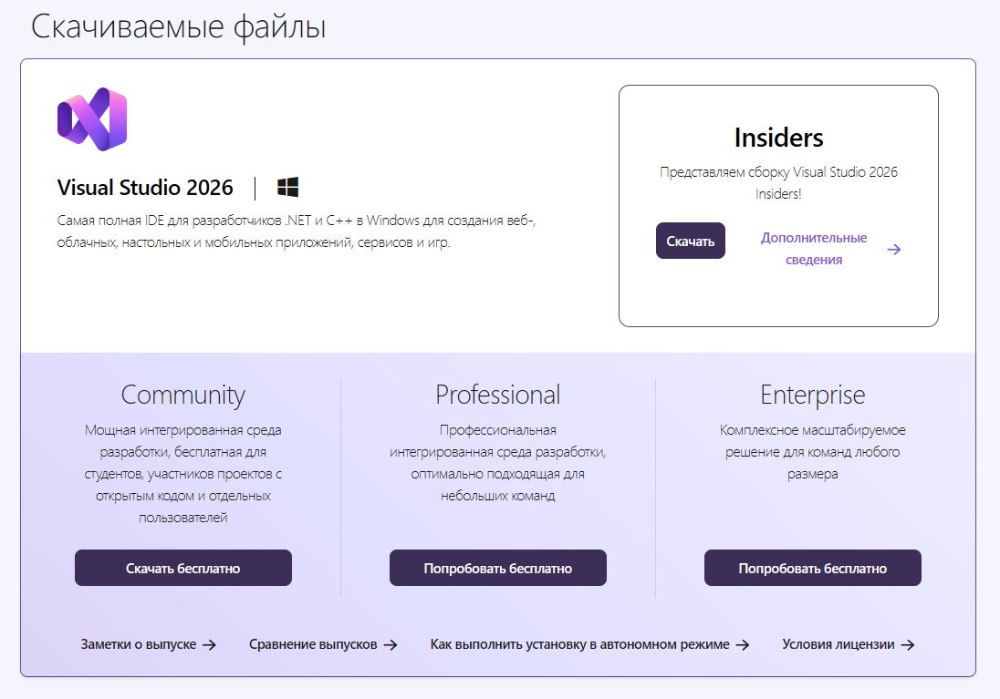
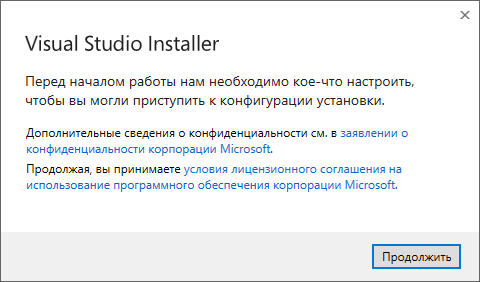
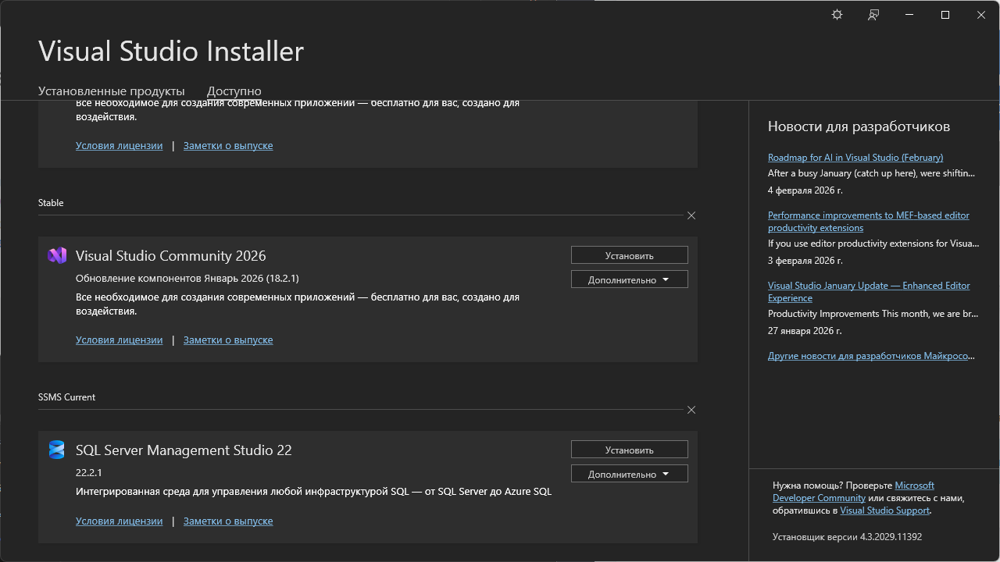
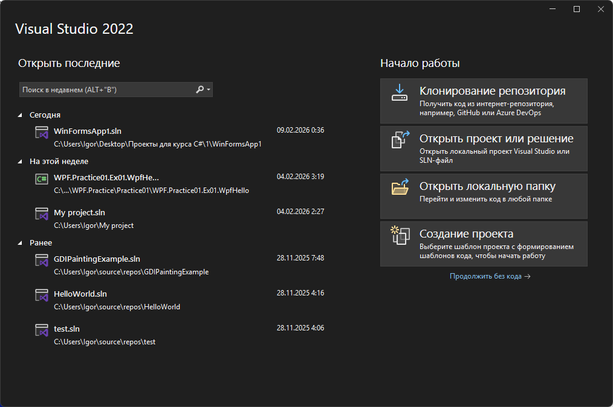

📋 Требования к системе
- ОС: Windows 7 SP1 или новее (рекомендуется Windows 10/11)
- Процессор: Intel или AMD с поддержкой SSE2
- ОЗУ: Минимум 2GB (рекомендуется 4GB+)
- Дисковое пространство: ~5GB для .NET Framework и Visual Studio
- Интернет: Требуется для скачивания и установки
🔧 Шаг 1: Установка Visual Studio Community
Скачайте Visual Studio Community
Это бесплатная профессиональная IDE от Microsoft, идеально подходит для обучения.
📥 Скачать Visual Studio Community
Выбирите версию для вашей ОС (Windows x86 или x64)
Запустите установщик
Найдите скачанный файл (обычно в папке Downloads) и запустите его двойным кликом.

Выберите рабочую нагрузку
При установке выберите:

Завершите установку
Нажмите кнопку "Install" и дождитесь завершения (может занять 10-30 минут).
📁 Шаг 2: Установка .NET Framework
Проверьте установлен ли .NET Framework
Откройте Command Prompt (cmd) и введите:
reg query "HKLM\SOFTWARE\Microsoft\NET Framework Setup\NDP"
Вы должны увидеть версии .NET Framework (обычно 4.x)
Если нужна установка
Скачайте с официального сайта Microsoft:
📥 Скачать .NET FrameworkВыбирите версию 4.7.2 или выше
🚀 Шаг 3: Создайте первый проект
Откройте Visual Studio
Найдите иконку Visual Studio на рабочем столе или в меню Пуск.
Создайте новый проект
На стартовом экране нажмите кнопку "Создать проект" (Create a new project)
Если у вас уже открыт другой проект, выберите: Файл → Создать → Проект

Выберите тип проекта
Поищите "Windows Forms App" и выберите вариант ".NET Framework" (НЕ .NET Core)
Нажмите Create
Visual Studio создаст новый проект с готовой формой.
Запустите проект
Нажмите F5 или найдите кнопку "Start" (▶️) на панели инструментов.
✅ Если появилось окно формы - всё работает! Вы готовы к курсу!
🐛 Решение типичных проблем
❌ Проблема: "Windows Forms App" не видна в шаблонах
Решение:
- Откройте Visual Studio Installer
- Нажмите "Modify" рядом с установленным Visual Studio
- Убедитесь что ".NET desktop development" выбран
- Нажмите "Modify" и разрешите установку
❌ Проблема: Ошибка при попытке запустить (F5)
Решение:
- Проверьте что .NET Framework установлен (см. Шаг 2)
- Перезагрузите Visual Studio
- Если всё ещё не работает, переустановите .NET Framework v4.7.2+
❌ Проблема: "The .NET Framework version is not supported"
Решение:
- Откройте Properties проекта (правый клик на проект)
- Перейдите на вкладку "Application"
- Измените "Target Framework" на 4.7.2 или выше